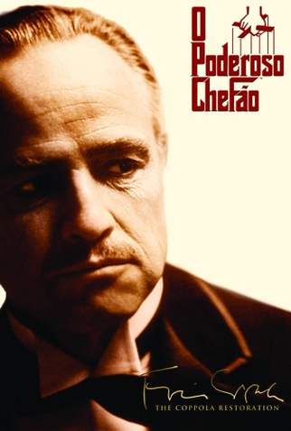
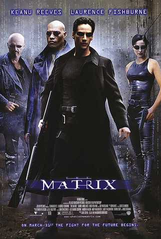
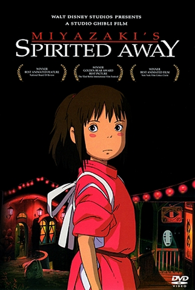
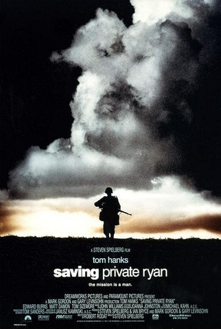

O Poderoso Chefão
A família Corleone, seus laços e conflitos em um dos grandes épicos do cinema.
Direção: Francis Ford CoppolaAlgumas histórias atravessam gerações. Aqui, cada escolha tem personalidade, emoção e espaço para ficar com você.

A família Corleone, seus laços e conflitos em um dos grandes épicos do cinema.
Direção: Francis Ford Coppola
Um hacker começa a questionar a realidade e descobre que o mundo esconde outra camada.
Direção: Lana e Lilly Wachowski
Uma jovem precisa encontrar coragem em um mundo mágico para salvar sua família.
Direção: Hayao Miyazaki
Uma médica e um anjo se encontram em uma história delicada sobre amor e escolhas.
Direção: Brad Silberling
Uma viagem pelo país se transforma em uma relação inesperada de afeto e esperança.
Direção: Walter Salles
O filme retrata a Segunda Guerra Mundial e a invasão da Normandia, mostrando o heroísmo e os sacrifícios dos soldados que precisam procurar o soldado Ryan e garantir o seu retorno, com vida, para casa..
Direção: Steven Spielberg
Uma linguista tenta encontrar uma linguagem comum com visitantes de outro mundo..
Direção: Denis Villeneuve
Uma viagem pelo país se transforma em uma relação inesperada de afeto e esperança.
Direção: Daniel Kwan, Daniel ScheinertOs títulos são sugestões editoriais. A disponibilidade para assistir pode variar conforme a região e o serviço de streaming.